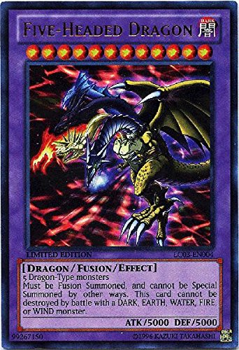
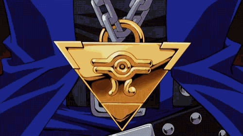

Yu-Gi-Oh! narra a história de Yugi Muto, um garoto tímido que ama todos os tipos de jogos, mas muitas vezes é intimidado ao seu redor. Um dia, ele ganha peças fragmentadas de um antigo artefato egípcio, o Enigma do Milênio Millennium Puzzle (千年パズル, Sennen Pazuru?), por seu avô Solomon Muto. Ao remontar o quebra-cabeça, seu corpo acolhe um espírito misterioso com a personalidade de um jogador. A partir desse momento, sempre que Yugi ou um de seus amigos é ameaçado por aqueles com escuridão em seus corações, este outro Yugi se manifesta e os desafia a perigosos Jogos da Sombra Jogos da Sombra (闇 の ゲ ー ム, Yami no Gemu?), que revelam a verdadeira natureza do coração de alguém, os perdedores dessas competições geralmente são submetidos a um castigo escuro chamado Jogo da Penalidade
 Se você viveu junho de 2003 provavelmente irá lembrar de quando Gilberto Barros atacou impiedosamente Yu-Gi-Oh! em seu programa na Band, o extinto Boa Noite Brasil. Sem dúvida um capítulo sombrio e inesquecível - pro lado negativo da coisa. Anos atrás relembrei aqui o assunto em virtude da volta do anime por aqui pela Netflix.
Essa aconteceu no finalzinho de julho, quando saí em férias. Ainda dá tempo de comentar pois é um assunto que faz parte da nossa história, mesmo que da pior forma. Numa live via Facebook, Gilberto voltou a falar sobre o assunto depois de 14 anos de sua falsa polêmica na TV que irritou muita gente.
Os Deuses Egípcios no são as criaturas mais poderosas dos Monstros de Duelo, Maximillion Pegasus criou suas respectivas cartas, armazenando em cada uma delas um poder milenar! Todos que ajudaram Pegasus no seu projeto foram atacados por espíritos, então o mesmo decidiu fazer o trabalho sozinho, sobre a proteção do seu span{Olho do Milênio}. Mas como ele não tinha o poder para controlar os Deuses, após um sonhos com os mesmos decidiu por lacrar as suas cartas, porém as mesmas foram roubadas e entraram no Jogo de Monstros de Duelo.
1° Slifer the Sky Dragon!
2° The Winged Dragon of Ra!
3° Obelisk the Tormentor!
Magic: The Gathering Arena é a nova versão do clássico jogo de cartas da Wizards of the Coast,
que está disponível para download grátis em PC.
O título permite que os jogadores criem decks usando as coleções de baralho mais recentes do card game e
enfrentem oponentes em diversas modalidades online,
incluindo ligas ranqueadas, drafts e partidas casuais.
Magic: The Gathering: jogo de cartas é promessa dos esports em 2019.
Criado por Richard Garfield (também envolvido no desenvolvimento de Artifact,
card game da Valve) em 1993, o jogo é sucesso no cenário competitivo. Atualmente, o
Magic: The Gathering Arena entrou no mundo dos eSports com a versão digital para Windows,
e há a promessa de boas premiações em seu cenário competitivo.